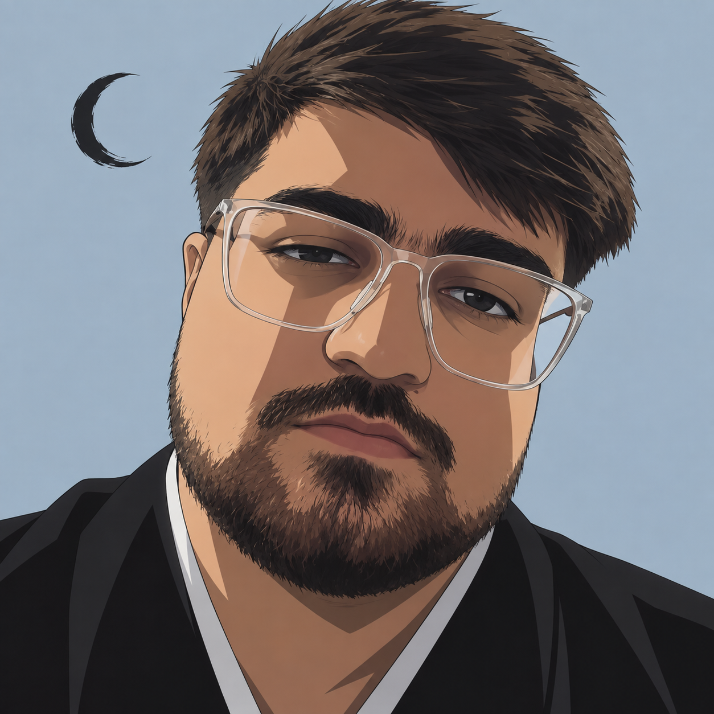
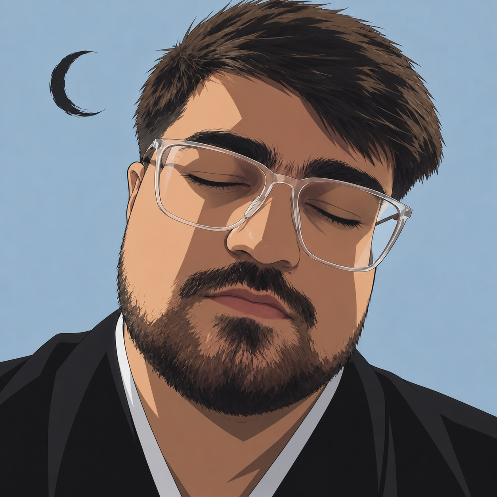
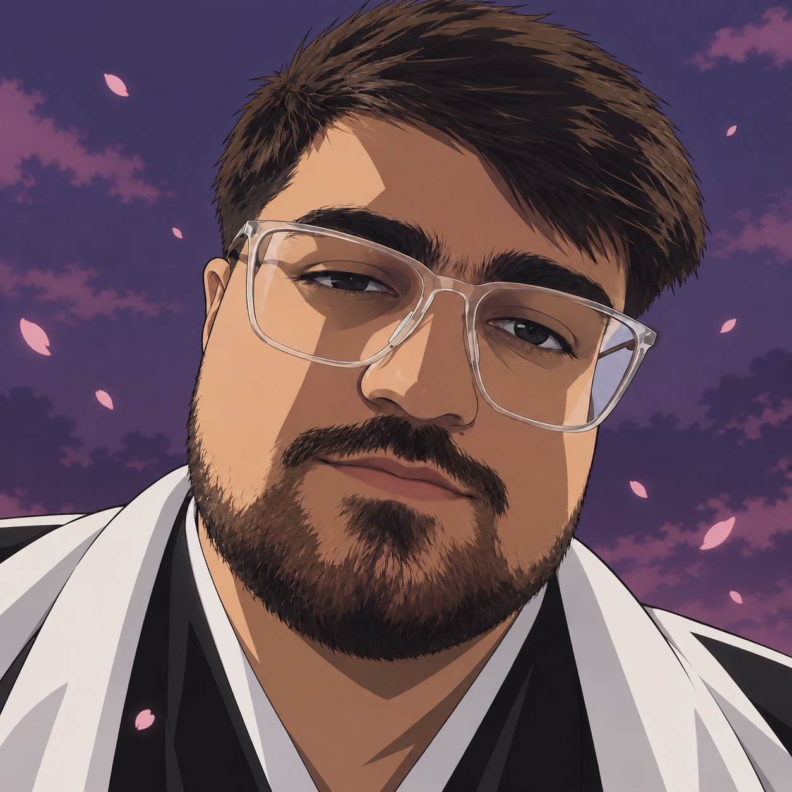
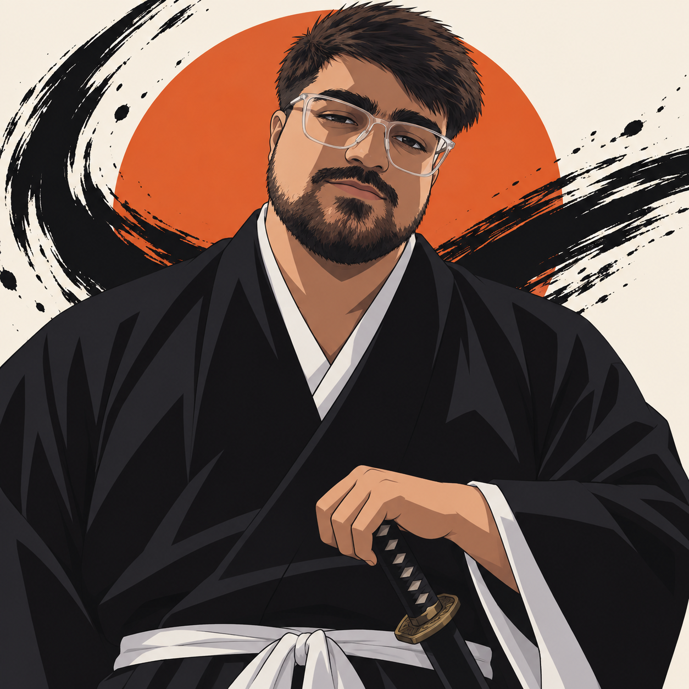

Bleach-inspired portraits from the same face reference. A quiet blink, drifting petals, and a bold ink treatment.


Quiet moon
A subtle blink and rising spirit particles.

Petal dusk
A white haori, violet sky, and floating petals.
Download PNG

Ink & sun
A wider portrait with a relaxed sword pose.
Download PNG